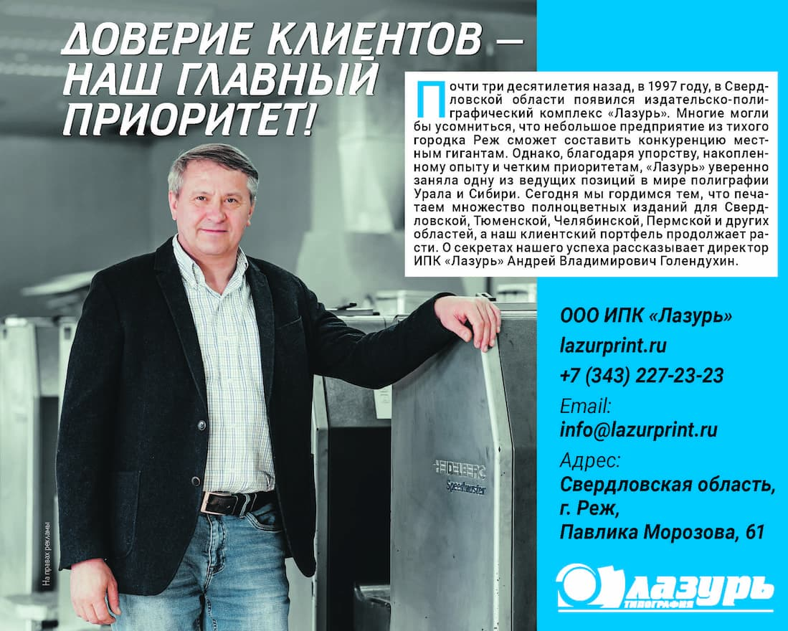
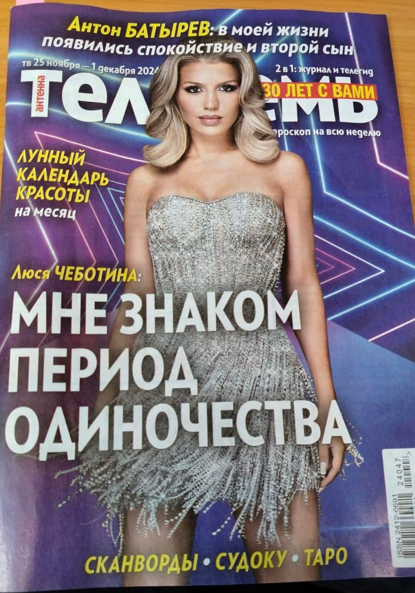
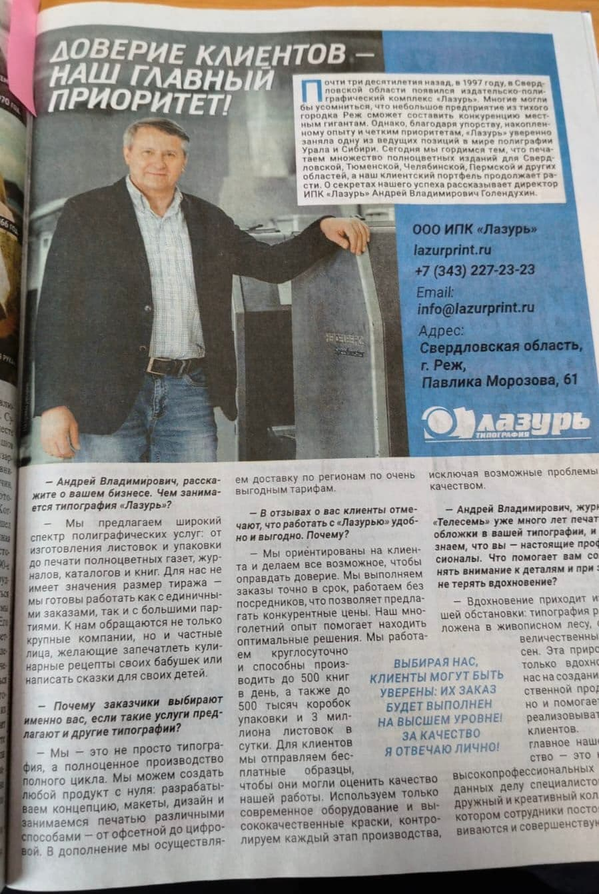

Почти три десятилетия назад, в 1997 году, в Свердловской области появился издательско-полиграфический комплекс «Лазурь». Многие могли бы усомниться, что небольшое предприятие из тихого городка Реж сможет составить конкуренцию местным гигантам. Однако, благодаря упорству, накопленному опыту и четким приоритетам, «Лазурь» уверенно заняла одну из ведущих позиций в мире полиграфии Урала и Сибири. Сегодня мы гордимся тем, что печатаем множество полноцветных изданий для Свердловской, Тюменской, Челябинской, Пермской и других областей, а наш клиентский портфель продолжает расти. О секретах нашего успеха рассказывает директор ИПК «Лазурь» Андрей Владимирович Голендухин.
— Мы предлагаем широкий спектр полиграфических услуг: от изготовления листовок и упаковки до печати полноцветных газет, журналов, каталогов и книг. Для нас не имеет значения размер тиража — мы готовы работать как с единичными заказами, так и с большими партиями. К нам обращаются не только крупные компании, но и частные лица, желающие запечатлеть кулинарные рецепты своих бабушек или написать сказки для своих детей.
— Мы — это не просто типография, а полноценное производство полного цикла. Мы можем создать любой продукт с нуля: разрабатываем концепцию, макеты, дизайн и занимаемся печатью различными способами — от офсетной до цифровой. В дополнение мы осуществляем доставку по регионам по очень выгодным тарифам.
— Мы ориентированы на клиента и делаем все возможное, чтобы оправдать доверие. Мы выполняем заказы точно в срок, работаем без посредников, что позволяет предлагать конкурентные цены. Наш многолетний опыт помогает находить оптимальные решения. Мы работаем круглосуточно и способны производить до 500 книг в день, а также до 500 тысяч коробок упаковки и 3 миллиона листовок в сутки. Для клиентов мы отправляем бесплатные образцы, чтобы они могли оценить качество нашей работы. Используем только современное оборудование и высококачественные краски, контролируем каждый этап производства, исключая возможные проблемы с качеством.
— Вдохновение приходит из нашей обстановки: типография расположена в живописном лесу, среди величественных сосен. Эта природа не только вдохновляет нас на создание качественной продукции, но и помогает легко реализовывать идеи клиентов. Однако главное наше богатство — это команда высокопрофессиональных и преданных делу специалистов. У нас дружный и креативный коллектив, в котором сотрудники постоянно развиваются и совершенствуются.
Выбирая нас, клиенты могут быть уверены: их заказ будет Выполнен на Высшем уровне! за качество я отвечаю лично!

